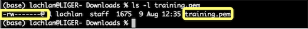
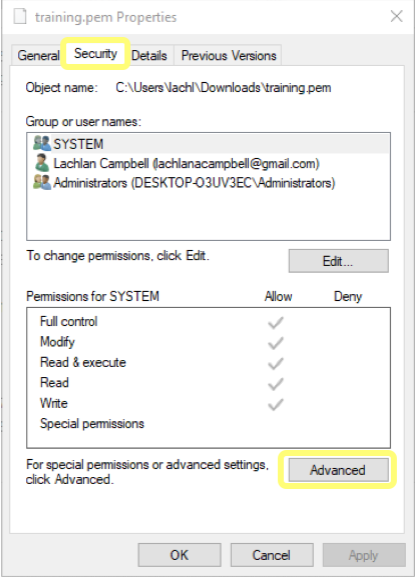
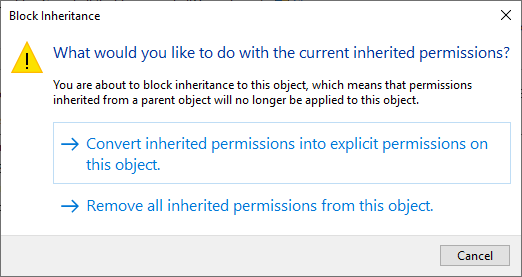
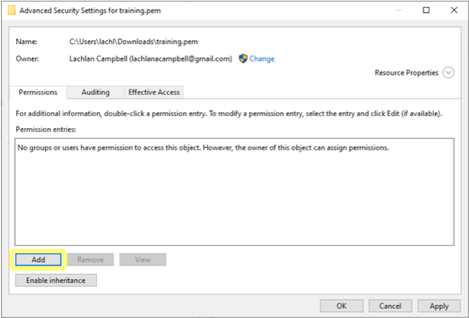
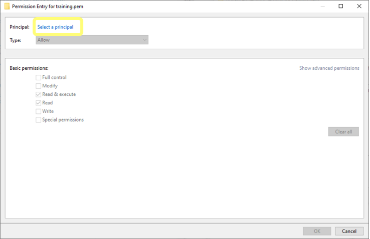
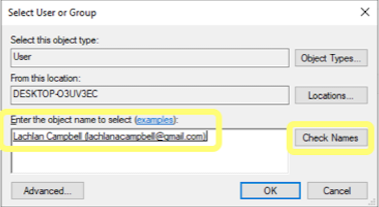
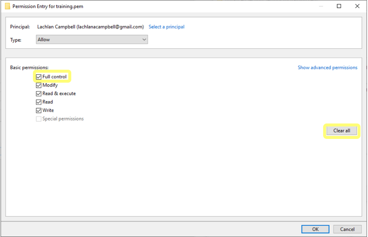
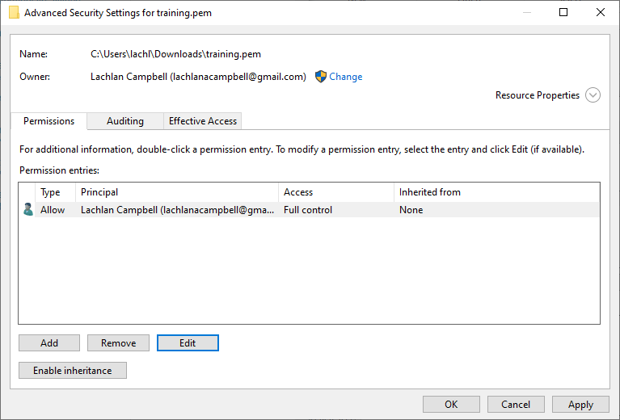
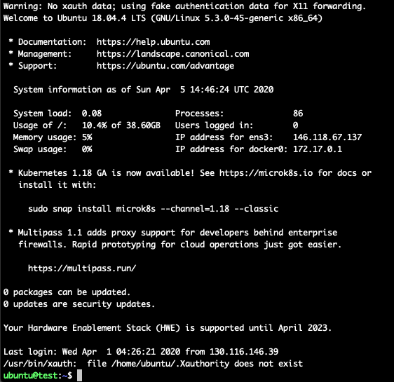

Instance Access
Overview
Teaching: 10 min
Exercises: 10 minQuestions
How do I securely log into a Nimbus instance?
Objectives
Discuss what is needed to log in to a Nimbus instance.
Successfully log in to a Nimbus instance.
Access to an instance is achieved using a Secure SHell (SSH) connection. For this you need a terminal, either the native terminal app on Linux/Mac OS systems, clients like Windows Terminal or MobaXTerm on Windows systems, or even a web-based terminal.
Before you start
There are three items you need to make sure you have on hand to sign into your instance:
Your instance’s IP address: get this from the instance overview in the Nimbus dashboard (Compute>Instance)
###.###.###.###
Your login name: this depends on the name of the Linux OS image you selected
Login names:
Ubuntu ubuntu Centos centos Fedora fedora Scientific Linux root Debian debian The location and name of your private key:
In episode 3 you created your keypair and wrote down the location where you saved the private key. For the following exercises you should eithercdto that location, or provide the path to that location in your commands. So, for example, if you are in the directory where your key is located, the command would look like:$ `command` `name_of_your_key`.pem
or alternatively, you could use:$ `command` `path/name_of_your_key`.pem
When you have all these things, the last thing you need to do is make sure your private key is secure. To do this you will modify its permissions so that only you have access to it. This is achieved differently depending upon the operating system you are using. Select your system below and follow the instructions:Linux, Unix, or Mac OS
On Unix based systems SSH will not work unless the key file is only readable by you. To make it so, run this command in your terminal:
$ chmod 600 `name_of_your_key`.pemTo check that the permissions are now set correctly, now type
$ ls -l `name_of_your_key`.pemand you should see an output like the following, showing that the file is read and write accessible only by the user (ie. you):
Windows
On Windows, SSH will work regardless of whether the key file is only readable by you. To modify the key’s permissions, locate it in Windows Explorer, right-click on it then select Properties. Navigate to the Security tab and click Advanced.

Disable inheritance and remove all permissions.

Then add a new permissions entry.

Click Select a principal and enter your user name. The easiest way to do this seems to be to enter the email address associated with your Microsoft account (the one listed under your profile information on the computer you are using), and then press Check Names. Otherwise, you can select the advanced option and it reveals a more comprehensive search engine for you to use.
 
Clear all permissions then grant yourself Full Control and apply the changes.

Your key file should now have security settings that look like those shown below.
Now you are ready to access your instance for the first time.
Activity: Access an instance
Type the following into your terminal, using your login name and the instance’s IP address:
$ ssh -i `name_of_your_key`.pem `login_name`@###.###.###.###
For example, if I used an Ubuntu image for my instance, and the instance IP is 146.118.67.137, and my key pair istest-instance.pem, I would enter:$ ssh -i test-instance.pem ubuntu@146.118.67.137
You will receive a message saying:The authenticity of host '146.118.67.137 (146.118.67.137)' can't be established.
It will then give a key fingerprint, and askAre you sure you want to continue connecting (yes/no)?
If you are sure (and/or confirm the fingerprint), answer ‘yes’ to continue. It will then give a warning,Warning: Permanently added '146.118.67.137' (ECDSA) to the list of known hosts.
meaning that next time you log in using this key and IP address you won’t receive this message. Having done that, your terminal should then display something like that shown in the figure below:
Congratulations, you have now successfully logged on to your instance!
Troubleshooting
It is easy to forget a step or misconfigure required elements. Whether you are working through this in a class, or by yourself, we find that (usually) the easiest fix is to delete the instance and make a new one, paying close attention to each step.
There are some common errors which we detail below:
ssh: Timeout
Most often the result of not including a security group which allows ssh access on port 22.
Solution: Go to the Nimbus dashboard and allocate an ssh access security group to your instance.
ssh: Permissions error
On a Unix based system this is the result of not changing the permissions of the private key file. On a Windows system it means you have changed the permissions but have not selected the correct user.
Solution: Go to the Before you start section in the lesson above, and make sure you follow the steps outlined for your operating system.
ssh: Could not resolve hostname \342\200\223i name or service unknown error - link
When using MobaXTerm if you cut and paste the ssh –i my_first_key.pem ubuntu@###.###.###.### example, the pasted command will include an incorrect character for the hypen, which the system will not understand and will result in an error.
Solution: Do not cut and paste the example - manually type in the ssh command.
For more, see the Nimbus Documentation.
Key Points
You can securely log in to your Nimbus instance from Linux, Mac, Unix, or Windows, using Secured Shell (SSH).